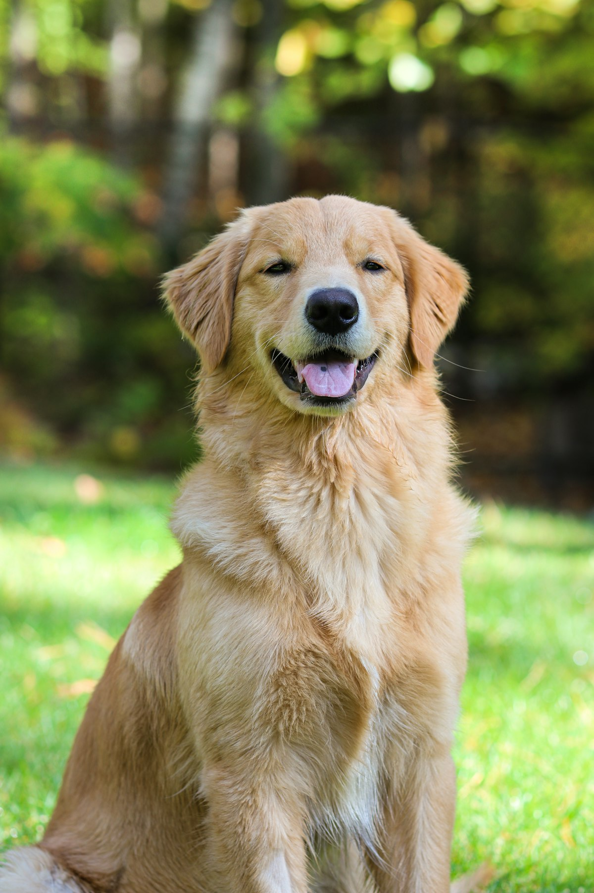

골든리트리버 키우기 완벽 가이드 — 수명 13.2년의 근거, 성격·질병·산책 관리

골든리트리버 수명은 영국 58만 마리 진료기록 자료(McMillan 2024)에서 중앙값 13.2년으로, 믹스견 12.0년보다 오히려 깁니다. "성격만큼은 최고"로 꼽히는 골든리트리버는 온순하고 사람을 좋아해 가족견으로 사랑받지만, 활동량이 많은 대형견이라 매일 충분한 산책과 공간, 그리고 대형견 특유의 관절 질환·비용을 감당할 준비가 필요합니다. 국내 진료기록에서 이 품종이 어디쯤 있는지, 보험 약관은 무엇을 빼는지까지 근거와 함께 정리했습니다.
한눈에 보는 골든리트리버
| 크기 | 대형견 (AKC 표준 수컷 65~75파운드≈29~34kg, 암컷 55~65파운드≈25~29kg) |
|---|---|
| 수명 | 중앙값 13.2년 (영국 584,734마리 자료 중 골든리트리버 11,506마리, 95% CI 13.1~13.2 · McMillan 2024) |
| 털빠짐 | 많음 (이중모, 환모기 관리 필수) |
| 활동량 | 높음 (하루 1시간 이상 산책) |
| 성격 | 온순·친화적, 훈련 잘 됨 |
| 초보자 적합도 | 가능 (공간·비용·산책 감당 시) |
성격과 기질
골든리트리버는 온화하고 참을성이 많아 아이가 있는 가정과도 잘 지냅니다. 사람을 좋아하고 학습 능력이 뛰어나 안내견·치료견으로도 활약합니다. 다만 사교성이 좋아 낯선 사람도 반기는 편이라 경비견 역할은 기대하기 어렵습니다.
에너지가 많아 운동이 부족하면 지루함에서 오는 문제 행동이 나타날 수 있습니다. 산책과 함께 물어오기 놀이, 노즈워크 등으로 몸과 머리를 쓰게 해주세요.
입양 전 현실 체크 — 비용·공간·시간
성격만 보고 데려왔다가 힘들어지는 지점은 대부분 성격이 아니라 체격에서 옵니다. 25~34kg이라는 숫자가 사료값, 약값, 이동 수단, 심지어 병원 선택까지 바꾸거든요. 아래는 건강한 성견 한 마리를 유지할 때의 대략적인 감각입니다. (지역과 병원에 따라 차이가 크니 절대값이 아니라 기준선으로 보세요.)
| 사료 | 하루 350~450g · 15kg 한 포로 한 달 남짓 → 월 5~8만 원 |
|---|---|
| 목욕·스파 | 3~4주에 한 번 · 회당 6~10만 원 (대형견을 받는 미용실 자체가 적음) |
| 예방약 | 월 3~5만 원 (체중에 비례해 소형견보다 비쌈) |
| 간식·용품 | 월 3~5만 원 (장난감 소모 속도가 빠름) |
| 합계(대략) | 월 17~28만 원 + 연 검진 20~30만 원 |
수술이나 마취가 필요한 상황에서는 격차가 더 벌어집니다. 마취제와 진통제는 체중에 맞춰 쓰기 때문에 같은 수술이라도 소형견보다 비용이 올라갑니다. 정확한 금액은 수술 종류와 병원에 따라 차이가 크니, 큰 처치가 예상되면 견적을 미리 받아보세요. 대형견은 관절 수술 가능성도 무시할 수 없어, 펫보험 체크리스트를 입양 초기에 한 번 훑어보는 편이 좋습니다.
공간은 넓이보다 바닥재가 중요합니다. 몸을 쭉 펴고 누울 자리 하나면 충분하지만, 미끄러운 강마루나 타일 위에서 자라면 관절에 계속 부담이 갑니다. 생활 동선에 러그나 매트를 깔아주는 것이 평수를 늘리는 것보다 훨씬 실질적입니다.
이동은 미리 계산해 두세요. 대형견은 대중교통과 택시 이용이 제한적이고, 다치거나 아플 때 안아서 옮길 수 없습니다. 30kg짜리를 병원까지 데려갈 방법이 없으면 응급 상황에서 그대로 발이 묶입니다. 차가 없다면 대형견 이동이 가능한 펫택시를 미리 알아두는 것도 준비의 일부예요.
시간은 산책 1시간 이상(2회 분할)에 빗질과 놀이를 더해 하루 1시간 반에서 2시간을 잡아야 합니다. 사람을 워낙 좋아하는 품종이라 혼자 있는 시간에 대한 내성도 약한 편입니다. 매일 8시간 이상 혼자 두는 일이 반복되면 짖음이나 물건 파괴로 나타나기 쉬워, 어릴 때부터 짧은 부재를 연습시켜 두는 것이 좋습니다.
아파트에서 키우는 것 자체는 충분히 가능합니다. 다만 엘리베이터처럼 좁은 공간에서는 큰 개를 무서워하는 이웃이 있다는 점을 늘 염두에 두고, 리드줄을 짧게 잡고 벽 쪽으로 붙어 서는 습관을 들이면 갈등이 크게 줄어듭니다.
주의해야 할 질병
- 고관절·팔꿈치 이형성증 — 대형견의 대표 관절 질환이고, 골든리트리버는 조사마다 높은 비율이 보고된 품종입니다. 영국 UFAW 유전질환 자료에 따르면 미국 연구에서 골든리트리버의 53~73%가 엑스선상 고관절 이형성증 소견을 보였고, 유럽·캐나다 연구에서는 45.4~55.7%였습니다 (UFAW — Golden Retriever Hip Dysplasia). 팔꿈치는 미국 OFA 검사에서 2003년까지 누적 9,630마리 중 11.6%가 이상 판정이었고, 1990~1993년생 11.8%에서 2001년생 7.3%로 줄어드는 추세입니다 (미국 골든리트리버클럽 GRCA). 다만 검사에 낸 개체 위주의 집계라 실제 발생률과는 다를 수 있습니다. MSD 수의 매뉴얼은 팔꿈치 이형성증의 파행이 생후 4~10개월에 나타난다고 설명하니 (MSD Vet Manual), 성장기에 앞다리를 절거나 앉았다 일어날 때 머뭇거리면 그냥 넘기지 마세요. 성장기 과도한 운동·비만이 악화 요인이라 체중 관리가 중요합니다.
- 암(혈관육종·림프종 등) — 미국 모리스동물재단(Morris Animal Foundation)이 2012년부터 골든리트리버 3,044마리를 평생 추적하는 골든리트리버 평생연구(Golden Retriever Lifetime Study)는 골든리트리버의 60%가 암의 영향을 받는다고 밝히고 있습니다. 이 연구가 집중 추적하는 네 가지 암은 혈관육종·림프종·골육종·고등급 비만세포종이고, 연구 설계 논문 (PLoS One 2022)은 1998년 미국 골든리트리버클럽 조사에서 사망 420건 중 61%가 암이었다고 인용합니다. 미국 개체군 기준이라 국내 골든에 그대로 옮길 수치는 아니지만, 이 품종에서 암이 관리의 중심이라는 점은 분명합니다. 연 1회 검진을 기본으로 하고, 8세 이후에는 아래 나이대별 항목에 적은 전신 촉진 체크를 빗질 루틴에 붙여두세요.
- 외이염 — 늘어진 귀에 습기가 차기 쉬워 정기적인 귀 관리가 필요합니다.
- 위확장·염전(고창증) — 대형견에게 특히 위험한 응급 질환입니다. 배가 팽팽하게 부풀고, 토하려 하는데 아무것도 나오지 않는 헛구역질을 반복하며, 눕지 못하고 안절부절못하는 모습이 대표적인 신호예요. 몇 시간 안에 위독해질 수 있으니 지체 없이 병원으로 가세요. 예방은 한 끼를 몰아 주지 말고 하루 두세 번으로 나눠 주기, 식사 전후 1시간은 격한 운동을 피하기입니다.
- 비만 — 식탐이 있어 주는 대로 먹습니다. 위에서 내려다봤을 때 허리가 잘록하지 않고, 손바닥으로 옆구리를 쓸었을 때 갈비뼈가 만져지지 않으면 이미 조정이 필요한 구간입니다.
국내 진료기록으로 본 골든리트리버 — 비중·수명·보험 약관
골든리트리버 정보는 대부분 미국·영국 자료를 옮긴 것입니다. 국내 자료에서 이 품종이 어디에 있는지 먼저 확인해 두면, 위의 영어권 수치를 어디까지 믿고 어디서 멈춰야 하는지가 보입니다.
국내 동물병원에서 골든은 상위 10위 밖
국내 103개 1차 동물병원의 2016~2024년 진료기록 28,812마리를 분석한 Frontiers in Veterinary Science 2026 논문에서 상위 10개 품종은 1위 말티즈 23.8%, 푸들 15.4%, 포메라니안 11.3%, 믹스 9.5%, 비숑프리제 6.3%, 시츄 5.0%, 요크셔테리어 4.3%, 치와와 3.4%, 말티푸 2.7%, 닥스훈트 1.7%로 합계 83.6%였고, 골든리트리버는 이 목록에 없습니다. 서울·전주 11개 병원 11,085마리를 본 PeerJ 2018 논문도 80종 넘게 관찰됐지만 500마리를 넘긴 품종은 소형견 6종(전체의 67.7%)뿐이어서, 골든리트리버는 품종별 분석에서 아예 빠졌습니다.
이 숫자는 "인기"가 아니라 병원 방문 비중입니다. 그래도 결론은 같습니다 — 국내 병원 진료기록으로는 골든리트리버의 질병 통계를 만들 표본 자체가 부족해서, 팔꿈치 이형성증·위염전·혈관육종 같은 이 품종 특유 질환의 국내 수치는 없습니다. 위 질병 항목에서 영어권 자료를 쓴 이유가 이것입니다. 참고할 만한 한 가지는, 같은 논문에서 순종견이 믹스견보다 외이염 진단 확률이 높았다는 점(보정 오즈비 1.42, 95% CI 1.32~1.52)입니다. 저자들은 귀 형태와 관련이 있다고 해석했는데, 이 자료의 순종견은 소형견이 대부분이라 골든에 그대로 적용할 수는 없습니다.
국내 수명 자료에는 골든 단독 수치가 없다
서울 6개 병원의 2004~2022년 사망기록 2,024마리를 분석한 Frontiers in Veterinary Science 2025 논문은 순종견의 중앙 생존기간을 3,743일(약 10.3년), 믹스견을 4,748일(약 13.0년)로 보고했고, 품종별 수치는 내지 않았습니다. 영국 자료에서 골든리트리버(13.2년)가 믹스견(12.0년)보다 길었던 것과 방향이 반대인데, 서울 자료는 순종견 1,823마리(전체의 90.07%)를 한 묶음으로만 분석해 골든만 떼어 볼 수 없습니다. 위에서 본 것처럼 국내 병원 표본은 소형견이 다수라, 이 "순종견" 수치를 대형견인 골든에 옮기기도 어렵습니다. 또 이 자료는 병원에서 사망이 확인된 개체만 표본이라 살아 있는 개체가 빠져 수명이 실제보다 낮게 잡힙니다(전체 기대수명 9.39년). 영국 자료의 13.2년은 사망 4,252건에 아직 살아 있는 개체까지 넣어 추정한 중앙값이라 계산 방식부터 다르고, 영국 사육환경 기준이라는 한계도 있습니다. 그래서 이 글은 "골든리트리버 수명 13.2년"을 영국 자료라고 못 박아 쓰고, 국내 단독 수치는 없다고 적습니다.
보험 약관: 팔꿈치는 면책, 고관절은 1년 대기
삼성화재 다이렉트 착한펫보험 반려견 약관 제6조 제2항 제15호는 유전·발달이상을 원인으로 하는 질병을 보상하지 않는다며 뼈·관절 영역에 팔꿈치 관절형성부전이 명시돼 있습니다. 골든리트리버의 대표 관절 질환 중 하나가 가입 시점과 무관하게 보상에서 빠지는 셈입니다. 반면 고관절형성부전은 이 면책 목록이 아니라 "보험계약일부터 1년 이내 발생분은 보상하지 않는다"는 1년 면책기간 조항으로 다뤄집니다(갱신·재가입 계약은 예외). 입양 직후 가입해도 첫 1년의 고관절 진단은 보장되지 않고, 그 뒤부터는 보장 대상이 된다는 뜻입니다. 이 약관 기준이며 다른 상품은 조항이 다를 수 있으니, 가입 전 펫보험 체크리스트와 함께 약관 원문의 면책 목록을 확인하세요.
관리 포인트 (산책·식이)
산책·운동
하루 1시간 이상, 가능하면 2회로 나눈 산책이 필요합니다. (산책 가이드) 성장기에는 관절 보호를 위해 과도한 점프·달리기를 자제하세요.
식이
식탐이 강해 비만이 되기 쉽습니다. 적정 급여량을 계산기로 확인하고, 위염전 예방을 위해 식후 바로 뛰지 않게 하세요.
털 관리 실전 — 환모기 대응
골든의 털은 물을 튕겨내는 긴 겉털과 체온을 지키는 촘촘한 속털, 두 겹으로 되어 있습니다. 평소에도 꾸준히 빠지지만 봄과 가을 환모기에는 속털이 뭉텅이로 빠져나옵니다. 이때 빗질을 게을리하면 빠진 속털이 사이에 갇혀 습기를 머금고, 그 자리가 피부 트러블로 이어지는 경우가 많습니다.
도구를 나눠 쓰세요
- 언더코트 레이크 — 환모기의 주력. 속털을 긁어내는 용도라 힘을 빼고 털 결 방향으로 천천히 씁니다.
- 슬리커 브러시 — 겉털 엉킴 정리용. 같은 자리를 세게 반복하면 피부가 쓸리니 짧게 끊어서 씁니다.
- 금속 빗 — 마무리 점검용. 뿌리까지 걸림 없이 통과하면 그 부위는 끝난 겁니다.
엉킴이 몰리는 자리
등판은 대체로 무난하고, 문제는 늘 귀 뒤, 목 아래, 앞다리 겨드랑이, 뒷다리와 꼬리의 긴 장식털에서 생깁니다. 이 네 곳만 따로 챙겨도 미용실에서 "엉킴이 심해 밀어야 한다"는 말을 들을 일이 크게 줄어듭니다. 평소 주 2~3회, 환모기에는 매일 10~15분이면 충분합니다.
목욕과 건조
목욕은 3~4주에 한 번이면 적당합니다. 중요한 건 횟수보다 말리는 방식이에요. 이중모는 겉만 마르고 속은 젖어 있는 상태가 오래 가서, 손으로 털을 헤쳐 피부에 바람이 닿게 하며 말려야 합니다. 속이 덜 마른 채 방치되면 특히 장마철에 습진이나 핫스팟으로 번지기 쉬우니, 장마철 피부병 대처법을 함께 참고하세요.
대신 발바닥 패드 사이에 자란 털은 짧게 정리해 주세요. 실내 바닥에서 미끄러지는 주된 원인이고, 대형견에게 미끄러짐은 곧 관절 부담입니다.
나이대별 관리 포인트
성장기 (~18개월)
대형견은 골격이 여무는 데 1년 반 가까이 걸립니다. 이 시기의 목표는 "많이 키우기"가 아니라 천천히, 마르지도 찌지도 않게 키우기예요. 급하게 살이 붙으면 아직 무른 관절에 체중이 먼저 실려 이형성증의 악화 요인이 됩니다. 사료는 대형견 성장기용을 쓰고, 영양제로 칼슘을 따로 더하는 일은 수의사와 상의 없이 하지 마세요.
운동량은 늘리되 종류를 가립니다. 아스팔트 조깅, 계단 반복 오르내리기, 원반을 받으려 공중에서 몸을 비트는 점프는 성장판이 닫히기 전까지 피하는 편이 안전합니다. 산책 시간은 월령 × 5분 정도에서 시작해 컨디션을 보며 늘려가면 무리가 없습니다.
성견기 (1년 반~8세)
가장 안정적인 시기지만, 이때 붙은 체중이 노년의 관절 상태를 결정합니다. 한 달에 한 번 갈비뼈를 손바닥으로 쓸어보고 뼈의 굴곡이 만져지는지 확인하세요. (비만도 자가진단) 중성화 이후에는 필요 열량이 줄어드는데 급여량은 그대로인 경우가 많으니, 수술 후 한 달쯤 지나 양을 재조정하는 것이 좋습니다. 체중을 줄여야 할 때는 산책 강도를 갑자기 올리기보다 급여량부터 손대는 편이 관절에 안전합니다. 물놀이도 좋은 선택지지만, 골든은 물을 잔뜩 머금은 속털을 끝까지 말려야 하니 노는 시간만큼 말리는 시간도 함께 계산에 넣으세요.
노령기 (8세~)
골든은 여러 종류의 종양이 상대적으로 자주 보고되는 품종입니다. 겁을 먹으라는 뜻이 아니라, 일찍 발견할수록 선택지가 많다는 뜻으로 받아들이면 좋겠습니다. 빗질하는 김에 한 달에 한 번 전신을 훑는 습관을 들여보세요.
- 턱 아래, 겨드랑이, 사타구니, 무릎 뒤를 손끝으로 눌러 콩알처럼 부어오른 곳이 없는지 확인합니다. 좌우를 비교하면 차이를 알기 쉽습니다.
- 피부 밑 멍울은 크기와 위치를 메모해 두고, 커지거나 단단해지거나 자리에서 잘 밀리지 않으면 진료를 받으세요.
- 먹는 양은 그대로인데 체중이 줄거나, 산책을 앞두고 머뭇거리거나, 잇몸이 창백해지는 변화도 그냥 넘기지 마세요.
8세 이후에는 검진 간격을 6개월로 좁히고 혈액검사를 함께 받는 것을 권합니다. 위에 적은 항목은 진단 기준이 아니라 병원에 갈 시점을 잡기 위한 참고이니, 해당된다면 자가 판단 대신 수의사에게 확인받으세요.
훈련과 사회화
사람의 반응을 살피고 맞추려는 성향이 강해 훈련 난이도 자체는 낮은 축입니다. 문제는 정신적으로 늦게 어른이 된다는 점이에요. 몸은 1년이면 다 크는데 행동은 두세 살까지 강아지 같습니다. 그래서 "지금은 아기니까 나중에"라고 미룬 습관이 30kg 몸으로 그대로 넘어옵니다.
덩치를 감안하면 다음 세 가지는 어릴 때 끝내두는 것이 좋습니다.
- 리드줄 느슨하게 걷기 — 골든이 줄을 당기는 이유는 대개 힘자랑이 아니라 저쪽에 있는 사람이나 개에게 인사하러 가고 싶어서입니다. 그래서 당길 때 끌려가 주면 "당기면 만날 수 있다"가 그대로 학습돼요. 거리를 좁혀주는 보상은 줄이 느슨할 때만 주고, 팽팽해지는 순간 그 자리에 멈춰 서세요.
- 네 발 인사 — 반가워서 뛰어오르는 행동은 강아지 때 귀여워 보여도 성견이 되면 아이나 어르신을 넘어뜨릴 수 있습니다. 뛰어오르면 등을 돌리고, 네 발이 바닥에 있을 때만 인사해 주세요.
- 이리와 — 사람을 좋아하는 성격이라 다른 사람에게 달려가려는 상황이 잦습니다. 부를 때마다 반드시 좋은 일이 생긴다는 경험을 쌓아두세요.
입으로 물건을 무는 마우딩 행동은 물어오는 일을 하던 품종의 본능이라 억지로 없애기보다 방향을 바꿔주는 편이 낫습니다. 손이 닿는 곳에 물어도 되는 장난감을 늘 두고, 사람 손을 물면 놀이를 즉시 중단하는 규칙을 지키면 자연스럽게 정리됩니다. 몸을 쓰는 산책만으로 에너지가 다 빠지지 않을 때는 사료를 숨겨 찾게 하는 노즈워크처럼 머리를 쓰는 활동을 15분만 더해도 만족도가 확 올라갑니다.
초보 보호자가 자주 하는 실수
-
"순하니까 훈련은 나중에"
골든은 공격성이 낮을 뿐 통제가 저절로 되는 개가 아닙니다. 사회화와 리드줄 훈련을 미루면 힘으로 감당할 수 없는 시점이 먼저 옵니다. 접종이 끝나기 전이라도 집 안에서 이름 부르기와 앉아부터 시작하세요. -
성장기에 함께 달리기·등산 시작
체력이 좋아 보인다고 성장판이 닫히기 전부터 장거리 운동을 시키면 관절이 먼저 상합니다. 산책 시간은 늘리되 강도는 두 살 이후에 올리는 것이 순서입니다. -
여름을 앞두고 짧게 밀기
시원해 보이는 건 사람 눈에만 그렇습니다. 이중모의 단열 기능이 사라져 오히려 더위와 피부 손상에 취약해집니다. -
목욕 후 겉만 말리기
만졌을 때 겉털이 보송하면 다 마른 것 같지만 속털은 아직 젖어 있습니다. 손가락으로 털을 갈라 피부에 바람을 넣어가며 말려야 습진과 냄새를 막을 수 있습니다. 물놀이나 목욕 뒤 귀 안쪽을 닦아 말리는 것도 같은 이유예요.
이런 분께 잘 맞아요
- 매일 충분한 산책이 가능하고 넓은 공간이 있는 분
- 대형견의 사료·의료 비용을 감당할 수 있는 분
- 가족 친화적이고 훈련이 잘 되는 대형견을 원하는 분
자주 묻는 질문 (FAQ)
Q. 골든리트리버 수명은 얼마나 되나요?
영국 58만 마리 진료기록 자료(McMillan 2024)에서 골든리트리버 11,506마리의 중앙 수명은 13.2년(95% CI 13.1~13.2)으로 믹스견 12.0년보다 깁니다. 다만 영국 사육환경 기준이고, 국내 자료에는 골든리트리버 단독 수명 수치가 없습니다.
Q. 골든리트리버는 초보자도 키울 수 있나요?
성격이 온순하고 훈련이 잘 돼 초보자도 가능합니다. 다만 매일 1시간 이상의 산책, 넓은 공간, 소형견보다 훨씬 큰 사료·의료 비용을 감당할 수 있어야 합니다.
Q. 골든리트리버는 얼마나 산책해야 하나요?
활동량이 많은 대형견이라 하루 1시간 이상, 가능하면 2회로 나눈 산책이 필요합니다. 운동이 부족하면 스트레스와 문제 행동으로 이어질 수 있습니다.
Q. 골든리트리버가 특히 조심해야 할 질병은?
고관절·팔꿈치 이형성증 같은 관절 질환과 암입니다. 미국 골든리트리버 평생연구(Morris Animal Foundation)는 골든리트리버의 60%가 암의 영향을 받는다고 밝히고 있고, OFA 팔꿈치 검사에서는 9,630마리 중 11.6%가 이상 판정을 받았습니다. 성장기 과도한 운동을 피하고 정기 검진으로 조기에 관리하는 것이 중요합니다.